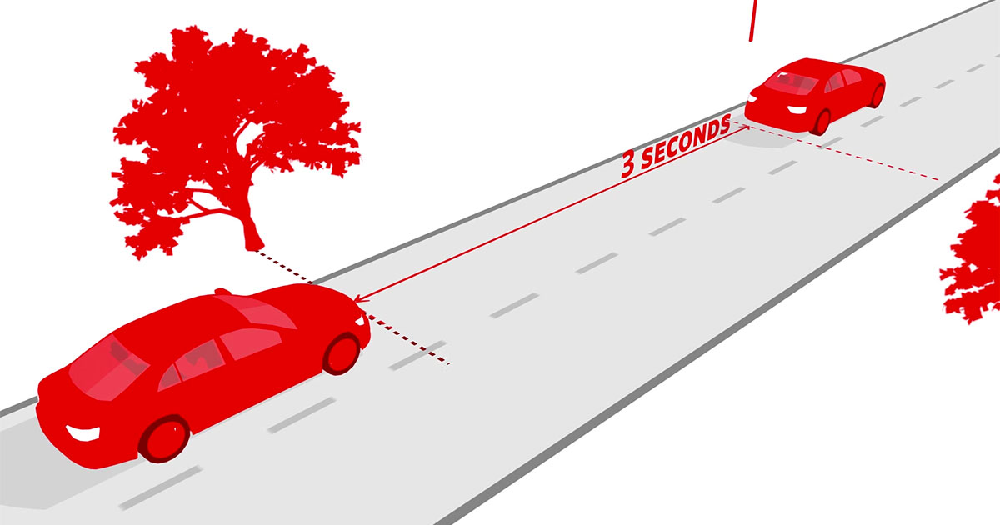
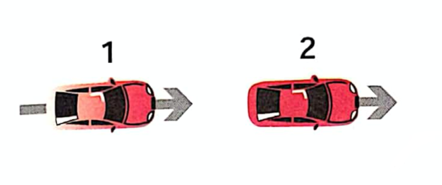
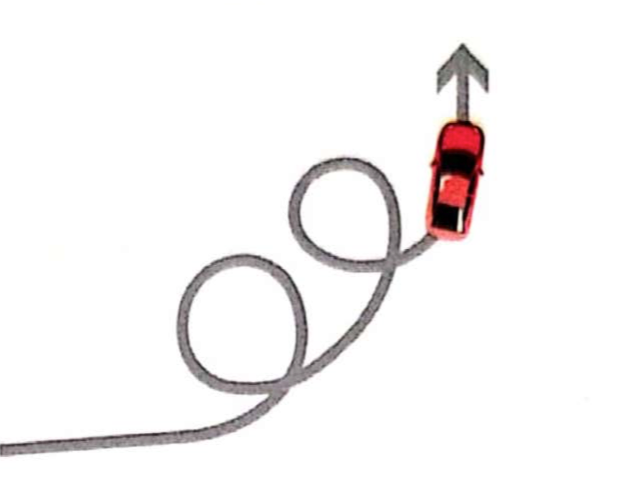
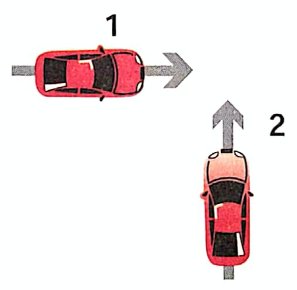

This page will show tips and tricks for helping you, the new (or going to be) driver, as well as how to avoid common mistakes done by new drivers.
The 3 Second Rule to Avoid Tailgating
What is tailgating? Tailing gating is the act of being too close to the are infront of you meaning there is a higher chance of hitting them. How to avoid this The easiest way to avoid tailgating is to always keep a three second gap between you and the car infront of you. 3 seconds might be a confusing way to look at how much space to keep between you and the car in front of you but this is easily explained.
The way to measure three seconds is to use a fixed point, e.g. a tree as seen in the example, to count the distance between you and the car in front of you. Once the car in front of you have passed the fixed point start counting in your head until your car has reached the point. If the time is three seconds good job! You are the right distance behind the car in front of you. If the time is longer than three seconds you should speed up a little and if its less it most likely means you are tailgating or close to it and you should slow down.
Remove Distractions

The most common reason for a rear end crash with driver 1 at fault is when driver 1 is tailgating driver 2. Tailgating is the act of driving too close to the car in front of you
Third Most Common Young Driver Crash: Off Road

The reason off road crashes are the third most common type of crash is generally because of fatigue. A driver while fatigued will start to slide over to one side as they grow more drowsy, if they lean to the right, they will hit the window and wake the driver up. If they lean forward they will hit the steering wheel and be woken. But if the driver leans to the left there is nothing to stop their body and wake them up, this results in the driver dragging the wheel with them as they lean to the left, meaning they drive to the left and go offroad and crash
Fourth Most Common Young Driver Crash: Rear End, Driver 2 at fault
Rear end crashs where driver 2 is at fault are generally because of a sudden lane change that driver 2 makes at much slower speed than road 1. This frequently happens when there is traffic or an accident up ahead. Driver 2 don’t realize that you are already in the lane and traveling at a much faster speed than they are, or they simply never saw you or never cared to look before changing lanes. Resulting in Driver 2 suddenly appears in your lane, traveling much slower than you, and there is nothing you can do to avoid the collision.
Least Common Young Driver Crash: Cross Traffic

The reason cross traffic crashes are caused are similiar to the right through crash, it is a misscalculating of speed and time. Either this or Driver 1 is in hurry and try to drive past your quickly.